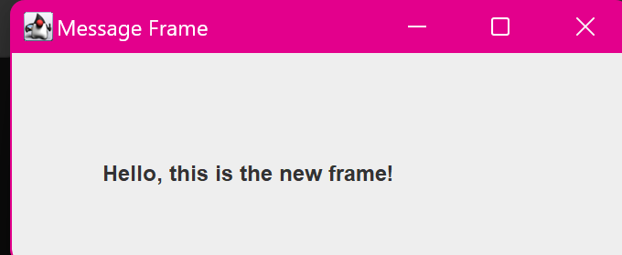

12. Java Program to Display a Message in a New Frame
import javax.swing.JFrame;
import javax.swing.JButton;
import javax.swing.JLabel;
import java.awt.event.ActionListener;
import java.awt.event.ActionEvent;
class main {
public static void main(String[] args) {
JFrame frame = new JFrame("Main Frame");
// Create a button
JButton button = new JButton("Show Message");
button.setBounds(50, 50, 150, 30);
button.addActionListener(new ActionListener() {
public void actionPerformed(ActionEvent e) {
// Create and display a new frame with a message
createMessageFrame();
}
});
// Set up the main frame
frame.setLayout(null);
frame.setSize(250, 150);
frame.add(button);
frame.setDefaultCloseOperation(JFrame.EXIT_ON_CLOSE);
frame.setVisible(true);
System.out.println("Main frame is ready to show a message
in a new frame.");
}
// Method to create and display the new frame with a message
public static void createMessageFrame() {
JFrame messageFrame = new JFrame("Message Frame");
// Create a label to display the message
JLabel label = new JLabel("Hello, this is the new frame!");
label.setBounds(50, 50, 250, 30);
// Set up the message frame
messageFrame.setLayout(null);
messageFrame.setSize(350, 150);
messageFrame.add(label);
messageFrame.setDefaultCloseOperation(JFrame.
DISPOSE_ON_CLOSE);
messageFrame.setVisible(true);
System.out.println("New frame with message is displayed.");
}
}
